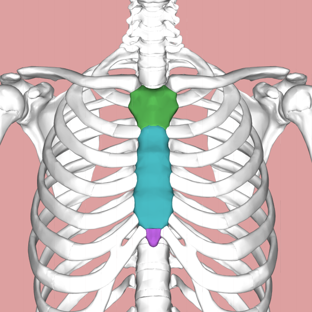
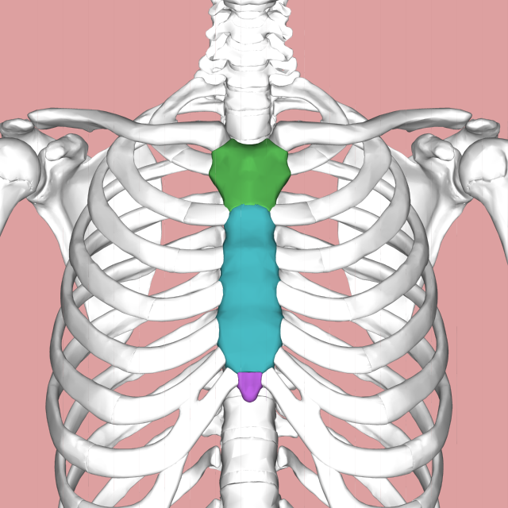

Tenías 12 años antes de quedar encerrada en Lyoko y perder tus recuerdos. Allí, debías estar constantemente atenta a las preguntas, pues si pierdes todos tus puntos desapareces para
siempre.
A lo largo de estos niveles de juego te haré unas preguntas donde si fallas una, pierdes.
BIOLOGÍA
El cuerpo de un bebé contiene 300 huesos. A la larga, estos se acaban
fusionando (se unen al crecer) para pasar a formar el esqueleto de 206 huesos de una persona adulta.
¿Cual es el hueso más largo del cuerpo humano?
 
